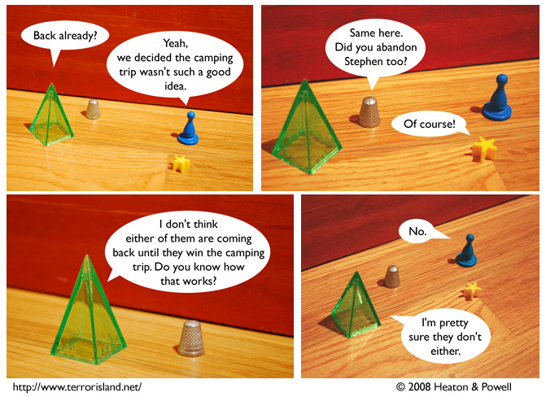

Strip #344
— Monday, August 25, 2008
No one knows how to win at camping because it is not actually a competitive event with victory conditions.
Notes, Thoughts, &c.
Ben’s Notes
Check out Aorist’s reflection in York in panel three. This is what happens with metal actors.
Lewis’s Notes
Ben is so good at scripting my comments, that I wanted to just let him do it all the time. Unfortunately, he wasn’t a fan of that plan, so this is what you all get.